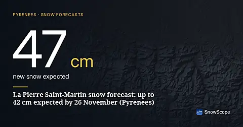
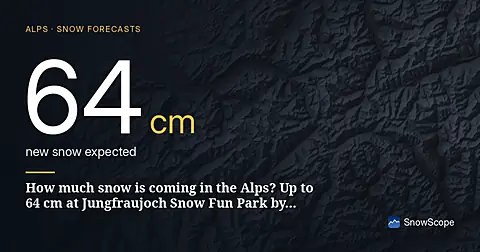
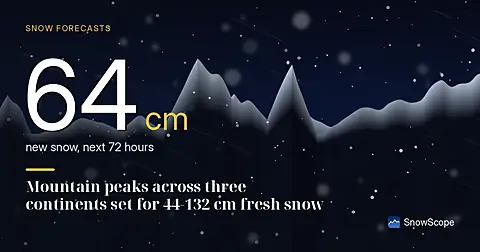
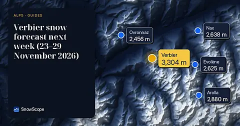
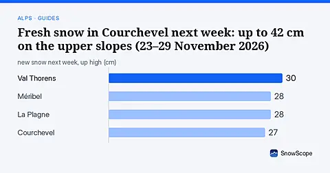
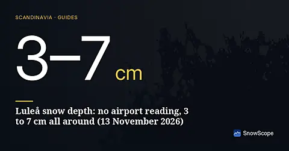
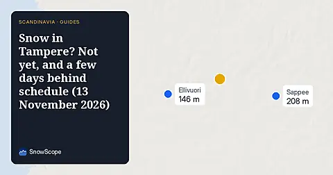

Snow reports · Snow forecast
Daily snow reports for skiers: where the snow is, what is coming and where to ski, from the SnowScope snow map and measuring stations. Every number comes from that day's data.


Prà Alpesina will see 57 cm of new snow by 26 November. Forecast data from 23 November shows heaviest falls on 25 November as freezing level rises.

La Pierre Saint-Martin snow forecast: up to 42 cm expected by 26 November (Pyrenees). At Astun, the freezing level reaches 1,960 m to 3,170 m on 24 …

Whistler Blackcomb will receive 101 cm of new snow by November 25, far exceeding early-season norms. Mount Cain Alpine Park leads the region with 132 cm forecast.

Wildcat Mountain forecast to gain 56 cm over 14 days. Week one (23–29 Nov) brings 29 cm, with 22 cm falling on 27 November. Data from 22 November.

Mixed rain and snow at Hurricane Ridge through 25 November. Up to 24 in (61 cm) forecast near the top; rain falls below 4,528 ft (1,380 m). Data from 22 November.

Mount Washington Alpine Resort forecast to receive 359 cm of new snow in the next 14 days, with the heaviest falls in week one. Data from 22 November 2026.

The 0 °C level rises to 3200 m on Tuesday, bringing rain to mid-mountain slopes. Snow line stays above base at most resorts until Wednesday.

The Alps will collect up to 95 cm of new snow in the next 14 days, with 63% arriving in the first week. Best conditions above 1500 m from November 23. Data from November 22.

By 25 November, 64 cm of new snow forecast at Jungfraujoch Snow Fun Park. Data from 22 November.

Jungfraujoch leads Europe with 44 cm in 24 hours; Mount Cain Alpine Park forecast for 132 cm in 72 hours. Forecast from 2026-11-22.

The 0 °C level reaches 12,861 ft (3,920 m) on 21 November in the US Northeast. Snow line peaks at 11,811 ft (3,600 m), above all resort tops.

The forecast shows up to 199 cm across the US West in the next two weeks, with the heaviest snow arriving in week one. Data from 21 November 2026.

Mt Baker will see 22 cm of new snow by November 24, but the freezing level rises above 1,000 m on November 22, bringing rain-on-snow risk to lower slopes.

Two-week snow forecast for Western Canada: Mount Washington Alpine Resort forecast to receive 202 cm by 5 December, with the heaviest snow on 24 November.

Mount Washington Alpine Resort leads with 76 cm of new snow forecast by 24 November. Data from 21 November 2026.

No snow on Atlas pistes on 21 November. High summits hold 1 cm at most. All three resorts are bare; the next storm may take weeks.

0 °C level in the Alps next days: 1,330–3,210 m. Snow line peaks at 2,900 m on 22 November. Rain-on-snow risk at mid-mountain resorts Sunday 22 November.

Fourteen days of new snow across the Alps from 22 November to 5 December: Les Deux Alpes gets about 94 cm, with 73% arriving in week one. Data from 21 November.
La Pierre Saint-Martin receives 18 cm of new snow over the next days. Forecast for the Pyrenees from 21 November shows most snow above 1,900 m.

Rain falls on thin snow through Saturday as the freezing level stays high; Sunday's shift brings 32 resorts into snow cover and 20 cm forecast at Candanchu.

Mixed rain and snow expected across the Pyrenees over the next three days, with the freezing level rising above resort summits by Sunday. New snow forecast between 13–24 cm at altitude.

The National Weather Service expects 10 to 20 inches in the Wasatch from Thursday to Saturday. Where Utah's snowpack stands against past winters, why Utah snow is lighter, and when to ski.

Alpe d'Huez will receive the most snow in the Alps over the next 72 hours. Beartooth Basin Summer leads the US West and Canada in fresh snow through Sunday.

Only Borovets and Bansko have a trace of snow at the top today, 2 cm each. A week ago Borovets had 11 cm. Day by day, and the one snowy day in the forecast.

Wildcat Mountain will receive the most snow in the Northeast over the next 14 days, with 29 cm forecast by our models as of November 19.

Up to 30 cm of snow fell on northern Velebit and Bjelolasica on Friday 13 November 2026. By Tuesday it was gone. Day by day, what the mountains kept, and when snow comes back.

Hakuba Happo-one gets about 1.7 m of new snow at the top lift from 19 to 25 November, but rain at the base until 20 November. Day-by-day forecast at three heights.

New snow will reach the Pyrenees in two waves over 14 days, with 91 cm forecast at high altitude. The first week brings 49 percent of the total; week 2 stays steady. Data from 19 November.

New snow forecast for 15 Japanese ski resorts from 20 to 25 November: Hakuba and Tsugaike lead with about 90 to 97 cm at the top, Niseko about 35 cm.

Only 3 of 318 snow stations in Japan had snow on the ground this morning. Here is where it is, what melted this week, and where the next snow falls.

How much snow will the mountains gain? Our table shows the resorts with the most new snow forecast for the next 24 hours and until 22 November, in …

China Peak will receive 33 in (83 cm) of snow by 21 November. Forecast issued 18 November for the US West.

Western Canada forecast: 90 cm new snow at Mount Washington in the next two weeks, with 70 cm expected in late November and early December.

Zermatt has 47 cm on upper slopes today, 690% above the November median. The 0°C level stays above 2200 m through Friday.

The 0 °C level swings between 1,900 m and 3,670 m across the Pyrenees 19–21 November. Where does rain turn to snow at each resort?

The Pyrenees will gain up to 63 cm of new snow in the next 14 days, with 70% arriving before 25 November. Data from 18 November.

New snow forecast for the Alps through early December. Saint François Longchamp leads with 228 cm expected over 14 days, starting with 35 cm on Thursday.

No new snow expected at Jbel Hebri or Oukaïmeden in the next 14 days. The Atlas will see less than 1 cm total through early December, based on the forecast for 18 November.

Alpine snow forecast 18 November: 110 cm expected at Orelle, 105 cm at Les Grands Montets. Best snow arrives Thursday and Friday.

Orelle leads the global forecast with 110 cm in 72 hours. Europe dominates; North America trails. Data from 18 November.


96 cm of new snow forecast for Les Arcs over the next three days, with today bringing the heaviest falls.

The two-week picture in the US West, 17 November to 30 November, drawn from the two forecasts that reach two weeks, ECMWF and GFS. Middle of the …

Sestriere forecast for 23–29 November: 30 cm at the top, with a range of 15–44 cm. Wednesday 25 brings the peak snowfall.

Fresh snow arrives at Madonna di Campiglio next week: 27 cm at the summit, with the heaviest falls on 25–27 November. Best day to ski is 26 November.

Val Gardena gets 11 cm at the top next week, most of it on 25–26 November. The base receives only 6 cm, suggesting a snow line on the lower slopes.

Cortina d'Ampezzo gets 13 cm at the summit next week (5–21 cm range), mostly on 25–26 November. Light refresh, not a base builder. Data from 16 November 2026.

Livigno's next week brings 19 cm median at the top (6–31 cm range), peaking Wednesday 25 and Thursday 26. Data from 16 November.

Courmayeur gets 26 cm of snow next week at 2700 m, with a range of 8–44 cm. Best days are 24–26 and 28–29 November. Forecast from 16 November 2026.

Next week Cervinia receives 23 cm at the top (3400 m), with Thursday 26 November as the peak snowfall day. Forecast from 16 November 2026.

Saalbach expects 17 cm mid-range at the top next week (23–29 Nov), with the best day on 29 Nov. Range 3–31 cm shows wide uncertainty.

Stubai Glacier expects 14 cm at the top next week (23–29 Nov), with the best snow on Thursday 26 November. Data from 16 November.

Hintertux gets 14 cm at the top next week (23–29 Nov): a surface refresh on the glacier, not a powder storm. Data from 16 November.

Mayrhofen forecast for 23–29 November: top gets 17 cm (2–31 cm range), best day is 29 November with 5–10 cm. Data from 16 November.

Kitzbühel forecast for 23–29 November: 18 cm at the top, with Friday and Sunday bringing the most snow. Data from 16 November.

Obergurgl will get 13 cm at the top next week (23–29 Nov), with the best day on 26 Nov. Light refresh, not a storm.

Sölden forecast: 13 cm at 3100 m next week, peaking Thursday 26 November. Upper slopes hold most snow; base gets 8 cm. Data from 16 November 2026.

Lech-Zürs faces a split forecast: modest snow this week, then 30 cm next week (7–53 cm range). Best day is Sunday 29 November.

Next week Ischgl's top slopes collect 18 cm (forecast 23–29 Nov). Thursday 26 is the heaviest day. Data from 16 November 2026.

St. Anton forecast for 23–29 November: 25 cm upper slopes, 25 cm mid-mountain, 18 cm base. Sunday 29 November is best. Data from 16 November.

Andermatt forecast for 23–29 November: 21 cm at the top, 19 cm mid-mountain, 15 cm at the base. Best snow on Wednesday 25 November.

Saas-Fee gets 22 cm on upper slopes next week, with Thursday 26 November the heaviest day. Forecast from 16 November 2026.

Engelberg snow forecast for 23–29 November 2026: 22 cm at the top (2–42 cm), 7 cm at the base, snowiest day Thursday 26 November, with neighbours compared.

Laax forecast 23–29 Nov: 21 cm at the top, 17 cm mid-mountain, 6 cm at base. Thursday 26 is the heaviest day.

Davos forecast for 23–29 November: 16 cm at the top, Thursday 26 November heaviest. Snow line sits high; best on Parsenn.

St. Moritz forecast for 23–29 November: 19 cm at the summit, 17 cm mid-mountain, 16 cm at base. Best snow Wednesday 25 through Friday 27.

Verbier's upper slopes get 24 cm next week (5–42 cm range). Thursday 26 November is the peak day. Forecast from 16 November.

Zermatt gets 23 cm of snow next week at 3800 m, with Thursday 26 November the best day. Forecast from 16 November 2026.

Next week Megève's top slopes will see 27 cm of snow (range 9–46 cm). Wednesday 25 brings the peak, with 7 cm. Data from 16 November.

Next week at Flaine: 27 cm forecast at the top (9–46 cm range), with four key snow days. Data from 16 November.

Avoriaz forecast for 23–29 November: 29 cm at the top (range 9–48 cm), 27 cm mid-mountain, 17 cm at base. Best days: 24, 25, 26, 29 November.

Serre Chevalier forecast for 23–29 November: 47 cm at the top, 40 cm at mid-mountain, 18 cm at the base. Wednesday 25 November is the peak day.

La Grave's top slopes near 3400 m will collect 49 cm in the week of 23–29 November 2026, with Wednesday 25 as the peak day. Data from 16 November.

Les 2 Alpes forecast for 23–29 November: 47 cm at 3200 m, 41 cm at 2400 m, 14 cm at base. Wednesday 25 is the peak day.

Alpe d'Huez forecast for 23–29 November: 40 cm at the top, 35 cm mid-mountain. Wednesday 25 is the key day. Data from 16 November.

La Plagne's upper slopes forecast 28 cm of fresh snow next week (23–29 Nov), building on 99 cm from earlier. Data from 16 November 2026.

Les Arcs forecast for 23–29 November: 29 cm at the top, 26 cm mid-mountain, 12 cm at the base. Data from 16 November.

Méribel's upper slopes collect 28 cm next week (23–29 Nov); most falls Wed–Thu and Sun. Data from 16 Nov.

Courchevel gets 27 cm at the top 23–29 November, with Wednesday 25 as the heaviest day. Forecast from 16 November.

Val Thorens receives 30 cm at the summit next week (23–29 Nov), with the best day on 25 Nov. Snow data from 16 November.

Tignes will collect 29 cm at the top next week, with Thursday 26 November as the snowiest day. Forecast from 16 November.

Val d'Isère gets 28 cm next week (10–46 cm range) with Thursday 26 November as the peak snowfall day. Forecast from 16 November 2026.

Chamonix's next week brings 27 cm at the top (8–46 cm range), peaking on Wednesday 25 November. Forecast for 23–29 November 2026.

Orelle reached 31 cm by 16 November, up 17 cm in one week. The Alps are forecast to get up to 103 cm more snow by 19 November.

The Atlas holds just 20 km² of snow on 15 November, all on high summits up to 4 cm deep. No snow at ski resorts; none forecast through 18 November.

79 cm new snow forecast for Les Grands Montets from 16–18 November, mostly above 2000 m elevation, based on forecast from 15 November.

At Andermatt (2963 m) the forecast gives 75 mm of precipitation from 15 November to 20 November. During the wet hours the 0 °C level stands near 2160

Courmayeur leads forecast with 88 cm in 72 hours; snow depth is at 142 percent of normal for mid-November as of November 15 data.

Himos opens a prepared cross-country loop on 14 November as natural snow remains absent from the forest floor around this Finnish resort.

Lofsdalen has 6–8 cm across the valley as of 13 November 2026, with 7 cm forecast over the next week and no rain threat.

On 14 November, Narvikfjellet has about 50 cm at the top and nothing at sea level. Snow depths vary with height by 1,000 metres.

Romme Alpin received patchy early snow on 13 November 2026. Borlänge station 12 km away measured 4 cm; Ludvika had 10 cm. Rain dominates the forecast.

Beitostølen has 12 cm measured at the weather station on 13 November. The whole ski area sits at the same altitude band, so snow depth barely changes from base to summit.

Vuokatti snow conditions in mid-November 2026: the stations at Sotkamo measured 0 cm on 13 November, Kajaani 1 cm; about 9 cm is forecast this week but some of it as rain; slopes aim to open 4 December. 46 past winters.

On 13 November, Kindsjön station at 425 m near Branäs measured 27 cm of snow while the valley floor stayed bare. Height is everything this week in Värmland.

Norefjell received 14 cm of fresh snow in the past week, with 45 cm now on the upper slopes. Data from 13 November 2026.

Tahko opens on made snow as natural cover melts. Expect 7–8 cm in the next week; rain and wet snow likely. Only 2 lifts running now.

Tänndalen has 7 cm at its base station on 13 November, with 8 cm forecast in the next week. Ramundberget opens 19 December.

Myrkdalen sits behind normal for mid-November, but 44 cm of new snow is forecast at the top in the next week. Data from 13 November.

Saariselkä has 4 cm measured at its station on 13 November. About 22 cm is forecast for the next week. The usual depth here on 14 November is 17 cm.

Riksgränsen holds 9 cm at base level on 13 November. Both resorts stay closed until February; the Arctic darkness, not snow depth, sets their season.

Hafjell has about 2 cm at the top on 14 November. The forecast adds 9 cm next week, but the base stays bare.

Snow is thin and patchy at Pyhä-Luosto on 13 November, but up to 23 cm is forecast in the next seven days across all heights.

Vemdalen snow conditions in mid-November 2026: Swedish weather stations around Vemdalsskalet and Björnrike measured 6 to 12 cm on 13 November after a snowy two days, about 8 cm more this week, opening plans and 46 past winters.

Voss will see 35 cm at the summit but rain at the base over the next week. Snow sits above 600 m, measuring 10 cm at nearby Mjølfjell on 13 November.

Sälen station near Kläppen measured 45 cm on 13 November after one night of heavy snow. Rain and mild air arrive this week. Data from 13 November 2026.

Ylläs snow conditions in mid-November 2026: the weather stations around Ylläs measured 0 to 2 cm on 13 November, far below normal; about 23 cm of snow is forecast this week with no rain, and the slopes aim to open on 21 November.

Kvitfjell has about 5 cm at the top on 14 November 2026, well behind the usual 27 cm. Upper slopes will gain snow this week; the base stays wet.

La Grave's snowpack grew 17 cm in a week to 43 cm on 14 November, now forecast to gain 61 cm over the next 72 hours as a system moves across the Alps.

Bergen city is snow-free on 13 November, but Kvamskogen 35 km inland has 5 cm. Heavy rain arrives Sunday with little chance of snow.

Göteborg city is snow-free on 13 November. Gunntorp, 39 km north-east, measured 12 cm, but coastal stations show 0 cm across the region.

Luleå's airport sent no snow depth today, but six surrounding stations all measured 3 to 7 cm of fresh snow on 13 November 2026—a normal start for mid-November.

Oulu's first snow cover of winter arrived on 13 November: 7 cm at the city station, above the usual 2 cm for this date. Forecast: 2–3 cm more by Saturday.

Rovaniemi has 7–8 cm of snow on 13 November, with 5 cm more forecast for the weekend. Thin but steady for the Arctic Circle.

Tampere has no snow on 13 November, but 2 cm fell 48 km away. The city is a few days late; usually half of winters have snow by now.

Tromsø town has 6 cm but the Lyngen Alps hold 44 cm. SnowScope measured snow across the region on 13 November.

Trondheim's coast is bare, but 18 cm lies inland at higher ground. SnowScope measured the snow on 13 November 2026.

Finland's snow on 13 November lies north of Oulu: 7 to 8 cm in the Rovaniemi region, but bare ground in the south where Helsinki measured 0 cm across all stations.

Jämtland's first solid snow cover arrived this week: 19 to 33 cm measured at stations around Storsjön on 13 November. No thaw expected.